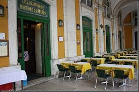
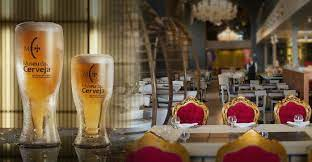

Fica as margens do Rio Tejo e as edificações do entorno serviram de moradia real durante anos. Hoje são ocupadas por repartições públicas, hotéis e cafés. Nesta região não deixe de visitar os seguintes pontos:
O Café Restaurante Martinho da Arcada, na Praça do Comércio, n.º 3, é o café mais antigo da cidade. A sua história, de mais de dois séculos, está ligada à literatura portuguesa.
O Museu da Cerveja e Cervejaria, foi fundado em 2012, na Praça do Comércio. O espaço foi criado para ser um centro cultura, gastronomia e principalmente de cervejas produzidas em países de Língua Portuguesa. Tem um delicioso bolinho de bacalhau (lá conhecido como pastel de bacalhau) recheado com queijo da Serra da Estrela. É de comer rezando!
